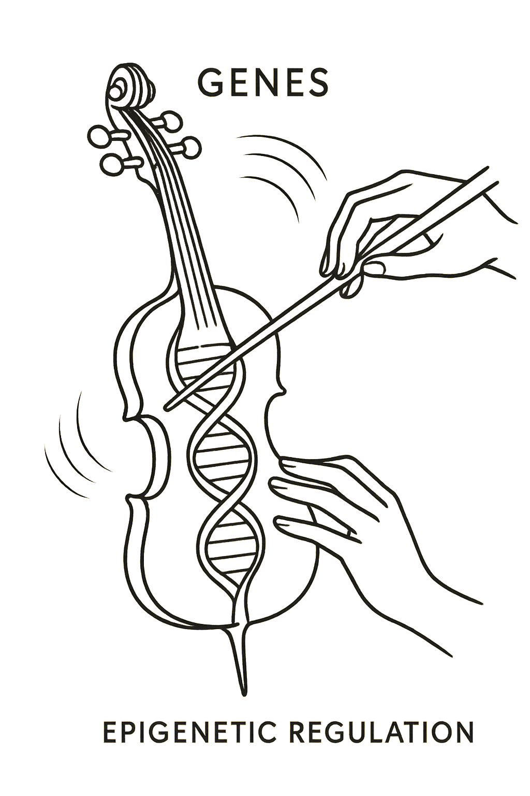
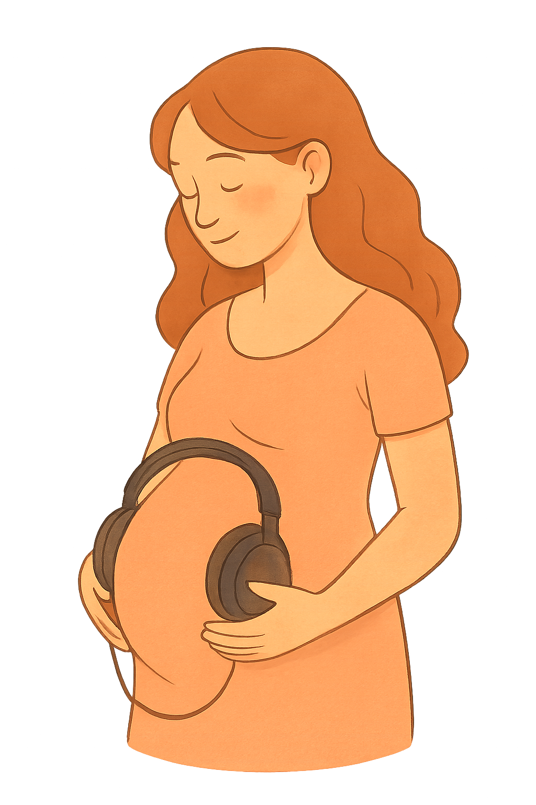

Oído absoluto: talento heredado que necesita experiencia para activarse

El oído absoluto, aunque existe una predisposición genética que puede facilitarlo, no basta con haber heredado ciertos genes. La epigenética ayuda a entender por qué unas personas desarrollan EA y otras, con una genética similar, no lo hacen.
Durante los primeros años de vida, el cerebro es especialmente sensible a los sonidos y al aprendizaje musical. La exposición temprana a la música —como aprender un instrumento antes de los seis años— puede activar mecanismos epigenéticos que favorecen la especialización del cerebro para procesar tonos. En otras palabras, la experiencia musical infantil puede “activar” genes relacionados con la percepción auditiva fina, permitiendo que la capacidad genética se exprese.
Percepción musical: herencia moldeada por el entorno
La percepción musical —es decir, nuestra facilidad para reconocer melodías, armonías o diferencias entre sonidos— también tiene una base heredada, pero la epigenética explica por qué no todas las personas con “buena genética musical” desarrollan el mismo nivel de habilidad. La música que escuchamos en casa, si nuestros cuidadores cantan, si tenemos acceso a instrumentos y si recibimos estímulos musicales frecuentes, todo eso puede provocar cambios epigenéticos que fortalecen las conexiones neuronales relacionadas con la música.
Gracias a estos mecanismos, dos personas con predisposición genética similar pueden seguir caminos distintos: una puede desarrollar un oído musical muy fino, mientras que otra no, dependiendo de la calidad y cantidad de experiencias musicales que haya vivido durante su infancia y adolescencia. La epigenética, por tanto, permite ver la musicalidad como algo moldeable y dependiente del ambiente, incluso cuando existe un componente hereditario.
Ritmo y memoria musical: el entrenamiento que transforma el cerebro
El sentido del ritmo y la memoria musical —la capacidad de recordar melodías, letras o patrones rítmicos— también están influidos por la epigenética. La práctica regular del ritmo ya sea mediante danza, percusión o actividades musicales, puede generar cambios en cómo se expresan los genes que participan en la coordinación motora, la atención y la conexión entre oído y movimiento. Estos cambios no alteran el ADN, pero sí pueden reforzar o debilitar las rutas neuronales implicadas en el ritmo.
Con la memoria musical sucede algo similar. Recordar canciones y melodías requiere activar redes cerebrales relacionadas con la memoria auditiva y verbal. La exposición constante a la música puede “entrenar” y reforzar estas redes a nivel epigenético, facilitando su funcionamiento y haciendo que la música se recuerde con mayor facilidad y por más tiempo.
Conclusión: la música como un diálogo entre genes y experiencia
La epigenética muestra que la musicalidad no es algo fijo ni predeterminado únicamente por la herencia. Aunque algunas personas nacen con una predisposición genética que puede facilitar habilidades musicales destacadas, estas capacidades necesitan del entorno adecuado para expresarse. La música en la infancia, la cultura, el idioma, el acceso a formación musical y la práctica constante pueden activar, fortalecer o incluso compensar la predisposición biológica.
En este sentido, la música es un ejemplo perfecto de cómo nuestra biología y nuestras experiencias trabajan juntas. No somos solo lo que heredamos, ni solo lo que vivimos: somos el resultado de la forma en que nuestras vivencias “hablan” con nuestros genes y los moldean. La epigenética permite comprender mejor esa relación y nos recuerda que el talento musical puede crecer, transformarse y desarrollarse cuando se combina la predisposición con un entorno rico en estímulos.

¿Te gustaría jugar?
Escucha los fragmentos musicales y responde cómo te hacen sentir
¿Quieres volver a otras páginas?

Descubre cómo la genética y la música se entrelazan en el estudio del sonido y la herencia
Descubre cómo tus preferencias musicales podrían relacionarse con rasgos genéticos y patrones de personalidad.